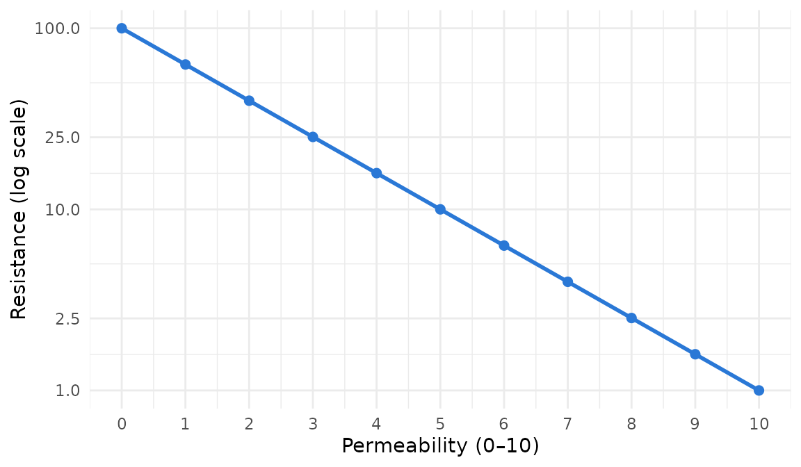
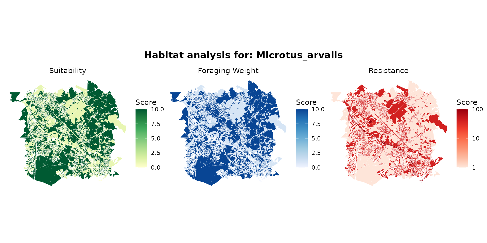
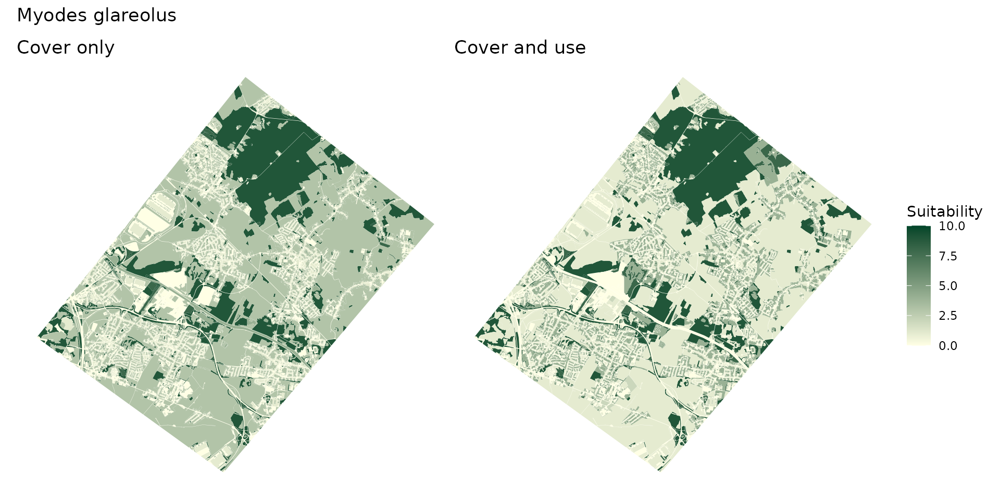
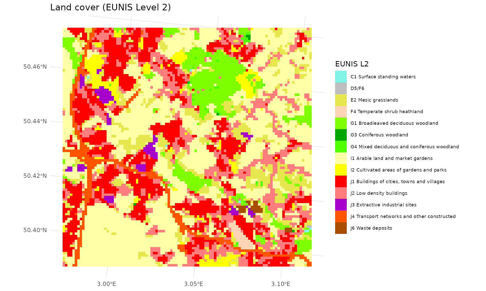
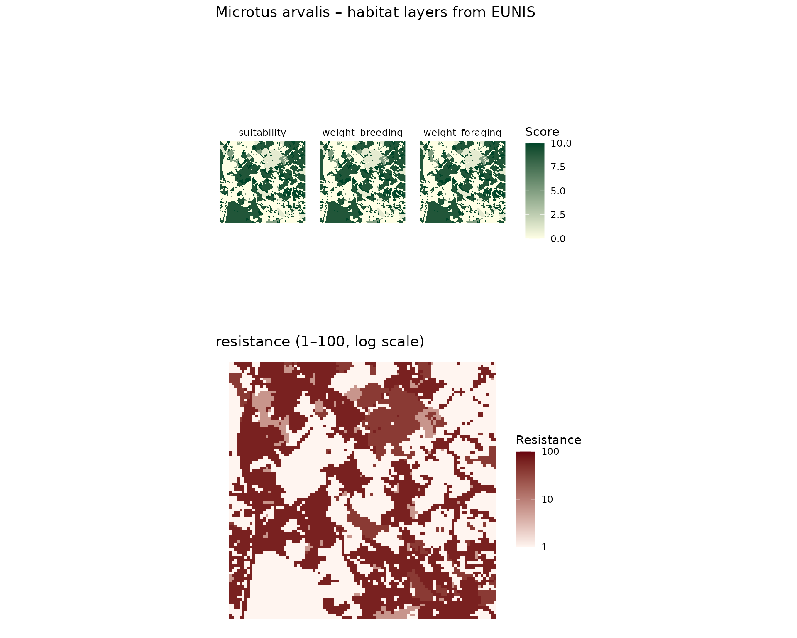
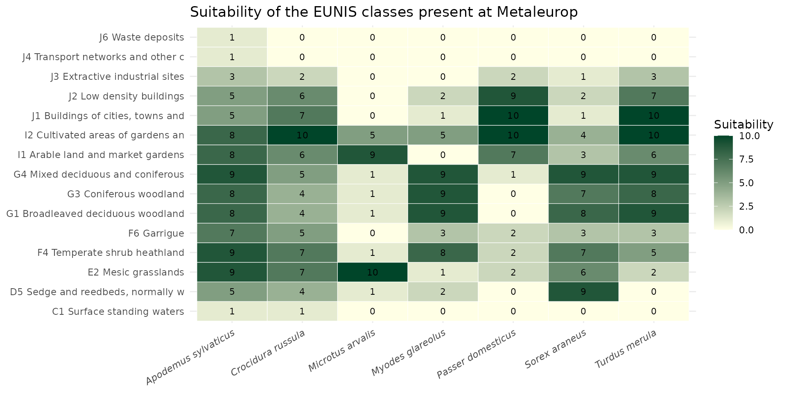
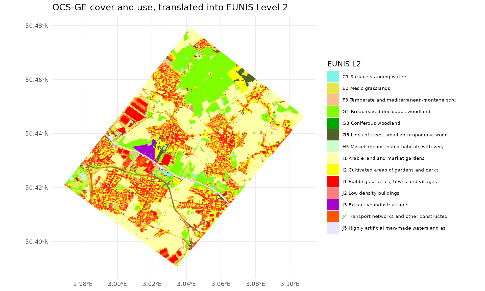
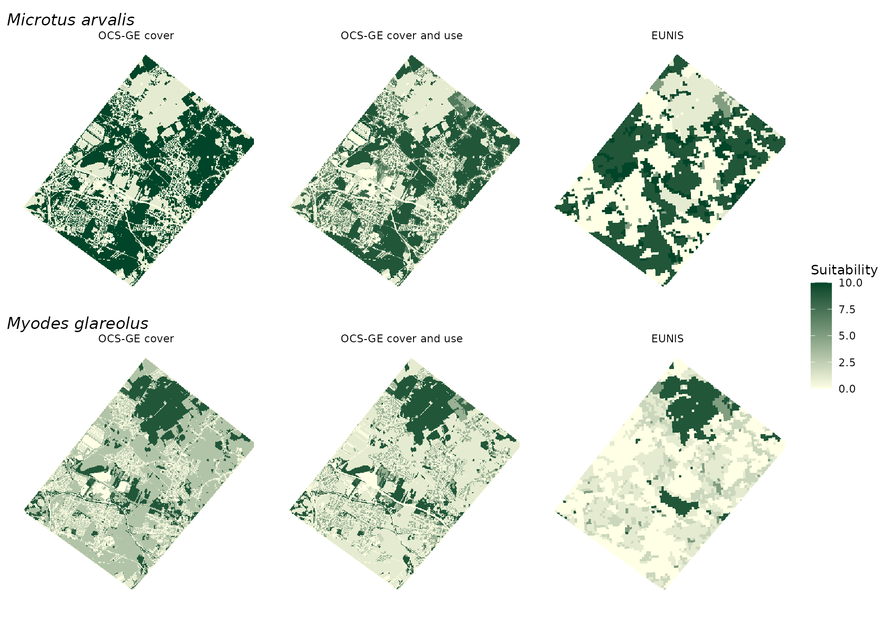

Introduction
A habitat layer tells, for each pixel of the landscape, how good the
place is for a species and how hard it is to cross. In
spacemodR it is always built the same way:
- a land cover map, which splits the landscape into classes;
- a species dictionary, which gives the scores of a species for each class;
- a join of the two, then a rasterization on the grid shared with the other layers (soil contamination, for instance).
The Habitat Layer guide follows these
steps with one map and explains how to turn the result into a
habitat object. This guide is about step 1: which map to
use, what each one can and cannot tell apart, and how to move from one
to another.
| Source | Extent | Resolution | Classes | Dictionary | Get the data |
|---|---|---|---|---|---|
OCS-GE, cover (CS) |
France | vector, about 1:5,000 | 14 |
ocsge_species_dict, rows with
code_us = NA
|
get_ocsge() |
OCS-GE, cover and use (CS x US) |
France | vector, about 1:5,000 | 14 covers, refined for 47 (cover, use) pairs |
ocsge_species_dict, rows with a
code_us
|
get_ocsge() |
| EUNIS Level 2 | 39 EEA countries | raster, 100 m | 45 | eunis_species_dict |
get_eunis_data() |
The table ref_ocsge_eunis links the OCS-GE and EUNIS
nomenclatures. Other sources that would refine these maps (agricultural
parcels, vegetation indices, LiDAR) are discussed at the end.
All examples use the Metaleurop site, and mostly two small mammals with opposite needs: the common vole (Microtus arvalis), a species of open farmland, and the bank vole (Myodes glareolus), a species of woodland and dense cover.
Species dictionaries
One schema for every source
ocsge_species_dict and eunis_species_dict
cover the same 935 European terrestrial vertebrates and have the same
columns. Only the column holding the land cover class differs.
data("ocsge_species_dict")
data("eunis_species_dict")
names(ocsge_species_dict)
#> [1] "code_cs" "code_us" "species_name" "sppID"
#> [5] "taxon_group" "suitability" "weight_breeding" "weight_foraging"
#> [9] "permeability" "resistance" "habitat_breadth" "specialization"
#> [13] "confidence" "in_france"
names(eunis_species_dict)
#> [1] "code_eunis" "species_name" "sppID" "taxon_group"
#> [5] "suitability" "weight_breeding" "weight_foraging" "permeability"
#> [9] "resistance" "habitat_breadth" "specialization" "confidence"
#> [13] "in_france"| Column | Level | Range | Meaning |
|---|---|---|---|
code_cs, code_us
|
class | – | OCS-GE cover and use. code_us is NA on the
rows that score a cover whatever its use. |
code_eunis |
class | – | EUNIS Level 2 code, as in ref_eunis and in the raster
returned by get_eunis_data(level = "L2"). |
species_name |
species | – | Scientific name, Genus_species. |
sppID |
species | – | EEA identifier; first letter gives the group (A, R, B, M). |
taxon_group |
species | – | amphibian, reptile, bird or mammal. |
suitability |
class | 0–10 | Overall habitat quality. Use as the source / habitat weight. |
weight_breeding |
class | 0–10 | Value as breeding, nesting, denning, roosting or larval site. |
weight_foraging |
class | 0–10 | Value for feeding. |
permeability |
class | 0–10 | Ease of movement (10 free, 7 readily, 4 reluctantly, 1 strong barrier, 0 impassable). |
resistance |
class | 1–100 |
10^(2 * (1 - permeability / 10)): 10 → 1, 5 → 10, 0 →
100. Use as the resistance layer.
|
habitat_breadth |
species | – | Number of classes with suitability >= 5 (out of 14
covers or 45 EUNIS classes). |
specialization |
species | 0–1 | 1 − normalised Shannon evenness of the suitability profile: 0 generalist, 1 specialist. |
confidence |
species | 1–3 | Quality of the source description: 1 vague or empty, 2 medium, 3 detailed. |
in_france |
species | 0/1 | 1 if the species occurs natively and regularly in metropolitan France. |
How the scores were built
The input is the habitat and avoided-habitat description of each species published by the EEA (O’Connor et al. 2024). A large language model (Claude Opus) read each description against a short ecological summary of every class and scored it with the same rules for all sources:
- Anchored scale. Every score uses the same reference points (0 unused or avoided, 2 marginal, 5 secondary, 8 main, 10 core habitat), so that a 5 means the same thing for a toad and for an eagle.
- Breeding separated from foraging. Many species breed in one habitat and feed in another (amphibians in ponds and woods, raptors on cliffs and in steppe).
- Taxon-aware movement. Flight, swimming and burrowing are taken into account, so a road is a strong barrier for a toad but not for a kite.
- Resistance derived, not scored. Resistance is computed from permeability on the 1–100 log scale expected by Omniscape, so the two can never contradict each other and no further transformation is needed.
data.frame(permeability = 0:10) %>%
mutate(resistance = 10^(2 * (1 - permeability / 10))) %>%
ggplot(aes(permeability, resistance)) +
geom_line(colour = "#2a78d6", linewidth = 1) +
geom_point(colour = "#2a78d6", size = 2) +
scale_y_log10(breaks = c(1, 2.5, 10, 25, 100)) +
scale_x_continuous(breaks = 0:10) +
theme_minimal() +
labs(x = "Permeability (0–10)", y = "Resistance (log scale)")
These are expert-judgement values, not values fitted to occurrence data.
Selecting species
The dictionaries cover Europe. Before working on a French site, keep the species that occur in France, and check how much is known about them:
ocsge_species_dict %>%
distinct(species_name, taxon_group, habitat_breadth, specialization, confidence, in_france) %>%
filter(in_france == 1, confidence == 3) %>%
arrange(desc(specialization)) %>%
head(8)
#> species_name taxon_group habitat_breadth specialization confidence
#> 1 Uria_aalge bird 0 1 3
#> 2 Gavia_arctica bird 1 1 3
#> 3 Gavia_immer bird 1 1 3
#> 4 Gavia_stellata bird 1 1 3
#> 5 Podiceps_auritus bird 1 1 3
#> 6 Podiceps_cristatus bird 1 1 3
#> 7 Podiceps_grisegena bird 1 1 3
#> 8 Podiceps_nigricollis bird 1 1 3
#> in_france
#> 1 1
#> 2 1
#> 3 1
#> 4 1
#> 5 1
#> 6 1
#> 7 1
#> 8 1Source 1: OCS-GE land cover (CS)
OCS-GE is the French large-scale land cover database. Its
couverture du sol (CS) describes what physically
covers the ground, in 14 classes.
data("ocsge_metaleurop")
data("ref_ocsge")
ref_ocsge[, c("code_cs", "nomenclature")]
#> code_cs nomenclature
#> 1 CS1.1.1.1 Zones bâties
#> 2 CS1.1.1.2 Zones non bâties
#> 3 CS1.1.2.1 Matériaux minéraux
#> 4 CS1.1.2.2 Matériaux composites
#> 5 CS1.2.1 Sols nus
#> 6 CS1.2.2 Surfaces d'eau
#> 7 CS1.2.3 Névés et glaciers
#> 8 CS2.1.1.1 Feuillus
#> 9 CS2.1.1.2 Conifères
#> 10 CS2.1.1.3 Mixte
#> 11 CS2.1.2 Formations arbustives, sous-arbrisseaux
#> 12 CS2.1.3 Autres formations ligneuses
#> 13 CS2.2.1 Formations herbacées
#> 14 CS2.2.2 Autres formations non ligneusesThe examples below use the layers shipped with the package. For
another site, get_ocsge() returns the polygons of a region
of interest, with their CS and US codes. It
reads them either from the download service of IGN, which publishes one
GeoPackage per department and vintage, or from a FlatGeobuf file that
you host.
# IGN: the departments of the ROI are downloaded once, then read from a cache
ocsge_site <- get_ocsge(roi_metaleurop, source = "ign", year = 2021)
# FlatGeobuf: only the features of the ROI are downloaded
ocsge_site <- get_ocsge(roi_metaleurop, source = "fgb",
fgb_url = "https://example.com/data/ocsge_france.fgb")join_ocsge_species() adds the scores of a species to the
polygons, and plot_species_habitat() maps them.
microtus_cs <- join_ocsge_species(ocsge_metaleurop, "Microtus_arvalis")
plot_species_habitat(microtus_cs)
The strength of this source is its geometry: buildings, roads, hedges
and ponds a few meters wide are mapped. Its weakness is that 14 cover
classes say little about habitats. Herbaceous cover
(CS2.2.1) holds cereal fields, meadows, lawns, road verges
and reedbeds alike, and a species gets a single score for all of
them:
ocsge_species_dict %>%
filter(code_cs == "CS2.2.1", is.na(code_us),
species_name %in% c("Microtus_arvalis", "Myodes_glareolus")) %>%
select(species_name, code_cs, suitability, weight_foraging, permeability)
#> species_name code_cs suitability weight_foraging permeability
#> 1 Microtus_arvalis CS2.2.1 10 10 10
#> 2 Myodes_glareolus CS2.2.1 3 3 5Source 2: OCS-GE land cover and land use (CS x US)
What the use adds
OCS-GE polygons also carry an usage du sol
(US): agriculture, forestry, residential, transport
networks, and so on. The use does not describe a habitat by itself, but
it tells what a cover stands for. On the Metaleurop site, herbaceous
cover is made of:
data("ocsge_us_metaleurop")
ocsge_us_metaleurop %>%
st_drop_geometry() %>%
filter(code_cs == "CS2.2.1") %>%
arrange(desc(area_ha)) %>%
mutate(share = round(100 * area_ha / sum(area_ha)))
#> code_cs code_us area_ha share
#> 1 CS2.2.1 US1.1 1581.64 62
#> 2 CS2.2.1 US5 523.07 21
#> 3 CS2.2.1 US3 188.80 7
#> 4 CS2.2.1 US6.3 110.41 4
#> 5 CS2.2.1 US4.1.1 48.81 2
#> 6 CS2.2.1 US2 44.53 2
#> 7 CS2.2.1 US4.2 30.03 1
#> 8 CS2.2.1 US1.3 9.76 0
#> 9 CS2.2.1 US4.3 8.56 0
#> 10 CS2.2.1 US4.1.2 2.13 0
#> 11 CS2.2.1 US6.1 0.27 0Crops (US1.1, agriculture) make more than half of it,
and gardens (US5, residential) about a fifth.
ocsge_species_dict has rows for the (cover, use) pairs
where the use matters:
ocsge_species_dict %>%
filter(code_cs == "CS2.2.1",
species_name %in% c("Microtus_arvalis", "Myodes_glareolus"),
is.na(code_us) | code_us %in% c("US1.1", "US1.2", "US3", "US5", "US6.3")) %>%
select(species_name, code_us, suitability) %>%
tidyr::pivot_wider(names_from = species_name, values_from = suitability)
#> # A tibble: 6 × 3
#> code_us Microtus_arvalis Myodes_glareolus
#> <chr> <int> <int>
#> 1 NA 10 3
#> 2 US1.1 9 1
#> 3 US1.2 5 6
#> 4 US3 7 4
#> 5 US5 7 4
#> 6 US6.3 8 1For the bank vole, herbaceous cover is poor habitat as a whole,
almost unused when it is farmed, and secondary habitat when it is a
forest clearing (US1.2). The common vole shows the opposite
pattern.
Rows with a code_us are not scored one by one: each
(cover, use) pair is linked to EUNIS classes by
ref_ocsge_eunis (see below) and takes a weighted
mean of their scores in eunis_species_dict.
Joining on cover and use
When the spatial object has a code_us column,
join_ocsge_species() uses it. A polygon takes the scores of
its (cover, use) pair when the dictionary has one, and the scores of its
cover otherwise; the column use_matched tells which.
myodes_us <- join_ocsge_species(ocsge_us_metaleurop, "Myodes_glareolus")
myodes_us %>%
st_drop_geometry() %>%
group_by(use_matched) %>%
summarise(pairs = n(), area_ha = round(sum(area_ha)))
#> # A tibble: 2 × 3
#> use_matched pairs area_ha
#> <lgl> <int> <dbl>
#> 1 FALSE 40 1961
#> 2 TRUE 28 2841To ignore the use, set us_col = NULL. The maps below
compare the two for the bank vole:
myodes_cs <- join_ocsge_species(ocsge_us_metaleurop, "Myodes_glareolus", us_col = NULL)
map_suit <- function(x, title) {
ggplot(x) +
geom_sf(aes(fill = suitability), color = NA) +
scale_fill_gradient(low = "#ffffe5", high = "#004529", limits = c(0, 10),
na.value = "transparent", name = "Suitability") +
theme_void() +
labs(title = title)
}
map_suit(myodes_cs, "Cover only") + map_suit(myodes_us, "Cover and use") +
plot_layout(guides = "collect") +
plot_annotation(title = "Myodes glareolus")
With the cover alone, every field and garden is poor habitat of the same value. With the use, farmland drops to almost nothing, while gardens, parks and forest clearings keep some value.
What the use cannot tell
Some distinctions remain out of reach of OCS-GE, with or without the use:
- crops and permanent grassland share the same cover and the same agricultural use;
- wetlands (reedbeds, wet meadows, bogs) are not identified;
- grassland types (dry, mesic, wet, alpine) are not separated;
- standing and running water, deciduous and evergreen broadleaved woodland are not separated.
Source 3: EUNIS
When to use it
EUNIS (European Nature Information System) is a habitat classification. The EEA Ecosystem Type Map v3.1 maps it over the 39 EEA countries at 100 m. It is the source to use when:
- the study area is outside France;
- the species depends on habitats that OCS-GE cannot separate. EUNIS Level 2 has 45 terrestrial classes, including 6 wetland types (D1–D6), 6 grassland types (E1–E7) and 10 scrub types (F1–FB).
The trade-off is resolution: one pixel of 100 m carries a single dominant class, so roads, hedges and gardens disappear into their surroundings.
The EUNIS land cover layer
get_eunis_data() downloads the EUNIS raster for any
region of interest from the EEA map service. To keep this guide
reproducible offline, the Metaleurop layer is kept in the source
repository (inst/extdata/eunis_metaleurop_L2.tif, read here
with a small helper, load_raster_repo()); it was produced
with:
data("roi_metaleurop")
eunis_lc <- get_eunis_data(roi_metaleurop, level = "L2", resolution = 100)
data("ref_eunis")
ref_l2 <- ref_eunis %>% filter(level == "L2") %>% select(code, nomenclature, couleur)
eunis_lc <- load_raster_repo("eunis_metaleurop_L2.tif")
lv <- terra::levels(eunis_lc)[[1]]
names(lv) <- c("value", "code")
lv %>% left_join(ref_l2, by = "code") %>% select(code, nomenclature)
#> code nomenclature
#> 1 C1 Surface standing waters
#> 2 D5/F6 <NA>
#> 3 E2 Mesic grasslands
#> 4 F4 Temperate shrub heathland
#> 5 G1 Broadleaved deciduous woodland
#> 6 G3 Coniferous woodland
#> 7 G4 Mixed deciduous and coniferous woodland
#> 8 I1 Arable land and market gardens
#> 9 I2 Cultivated areas of gardens and parks
#> 10 J1 Buildings of cities, towns and villages
#> 11 J2 Low density buildings
#> 12 J3 Extractive industrial sites
#> 13 J4 Transport networks and other constructed hard-surfaced areas
#> 14 J6 Waste depositsThe raster is categorical. Note the combined code
"D5/F6": the EEA service draws D5 (sedge and reedbeds) and
F6 (garrigue) with the same color, so these pixels cannot be told apart
(see ?get_eunis_data).
eunis_lab <- lv %>%
left_join(ref_l2, by = "code") %>%
transmute(value,
eunis = ifelse(is.na(nomenclature), code, paste(code, substr(nomenclature, 1, 40))),
couleur = ifelse(is.na(couleur), "#BDBDBD", couleur))
eunis_lc_lab <- eunis_lc
levels(eunis_lc_lab) <- eunis_lab[, c("value", "eunis")]
ggplot() +
geom_spatraster(data = eunis_lc_lab) +
scale_fill_manual(values = setNames(eunis_lab$couleur, eunis_lab$eunis),
na.value = "transparent", name = "EUNIS L2") +
theme_minimal() +
theme(legend.text = element_text(size = 7)) +
labs(title = "Land cover (EUNIS Level 2)")
From species scores to rasters
The map is a raster, so the join is a reclassification. We write a
small helper that replaces each EUNIS class by a species score. For
combined codes such as "D5/F6", the scores of the two
classes are averaged.
eunis_species_raster <- function(lc, species, var = "suitability",
dict = eunis_species_dict) {
lv <- terra::levels(lc)[[1]]
names(lv) <- c("value", "code")
d <- dict[dict$species_name == species, ]
if (nrow(d) == 0) stop("Species not found: ", species)
val <- vapply(strsplit(lv$code, "/"),
function(cc) mean(d[[var]][match(cc, d$code_eunis)]), numeric(1))
r <- lc
levels(r) <- NULL # drop categories, keep pixel ids
out <- terra::classify(r, cbind(lv$value, val))
names(out) <- var
out
}
vars <- c("suitability", "weight_breeding", "weight_foraging", "resistance")
microtus_eunis <- rast(lapply(vars, function(v) eunis_species_raster(eunis_lc, "Microtus_arvalis", v)))
p_score <- ggplot() +
geom_spatraster(data = microtus_eunis[[1:3]]) +
facet_wrap(~lyr) +
scale_fill_gradient(low = "#ffffe5", high = "#004529", limits = c(0, 10),
na.value = "transparent", name = "Score") +
theme_void()
p_res <- ggplot() +
geom_spatraster(data = microtus_eunis[["resistance"]]) +
scale_fill_gradient(low = "#fff5f0", high = "#67000d", trans = "log10", limits = c(1, 100),
na.value = "transparent", name = "Resistance") +
theme_void() +
labs(title = "resistance (1–100, log scale)")
p_score / p_res + plot_annotation(title = "Microtus arvalis – habitat layers from EUNIS")
Scores of the classes present on the site
species <- c("Apodemus_sylvaticus", "Microtus_arvalis", "Myodes_glareolus",
"Sorex_araneus", "Crocidura_russula", "Turdus_merula", "Passer_domesticus")
present <- unlist(strsplit(lv$code, "/"))
eunis_species_dict %>%
filter(species_name %in% species, code_eunis %in% present) %>%
left_join(ref_l2, by = c("code_eunis" = "code")) %>%
mutate(species_name = gsub("_", " ", species_name),
label = paste(code_eunis, substr(nomenclature, 1, 30))) %>%
ggplot(aes(species_name, label, fill = suitability)) +
geom_tile(colour = "white") +
geom_text(aes(label = suitability), size = 3) +
scale_fill_gradient(low = "#ffffe5", high = "#004529", limits = c(0, 10)) +
theme_minimal() +
theme(axis.text.x = element_text(angle = 30, hjust = 1, face = "italic")) +
labs(x = NULL, y = NULL, fill = "Suitability",
title = "Suitability of the EUNIS classes present at Metaleurop")
Arable land (I1), mesic grassland (E2) and gardens and parks (I2) are three separate classes here, with clearly different values for the two voles and the shrews. In OCS-GE they are a single cover.
Moving between nomenclatures
The OCS-GE / EUNIS crosswalk
OCS-GE and EUNIS do not nest: one describes what covers the ground,
the other describes habitats. ref_ocsge_eunis gives, for
each OCS-GE cover and for each (cover, use) pair that deserves it, a
ranked list of EUNIS classes.
data("ref_ocsge_eunis")
# default EUNIS class of each cover, with the other candidates
ref_ocsge_eunis %>%
filter(is.na(code_us)) %>%
group_by(code_cs) %>%
summarise(default = code_eunis[rank == 1],
others = paste(code_eunis[rank > 1], collapse = ", ")) %>%
left_join(ref_ocsge[, c("code_cs", "nomenclature")], by = "code_cs") %>%
select(code_cs, nomenclature, default, others)
#> # A tibble: 14 × 4
#> code_cs nomenclature default others
#> <chr> <chr> <chr> <chr>
#> 1 CS1.1.1.1 Zones bâties J1 "J2"
#> 2 CS1.1.1.2 Zones non bâties J4 "J1, J2"
#> 3 CS1.1.2.1 Matériaux minéraux J4 "J3, J1, J6, H5"
#> 4 CS1.1.2.2 Matériaux composites J6 ""
#> 5 CS1.2.1 Sols nus H5 "H3, H2, B1, B2, B…
#> 6 CS1.2.2 Surfaces d'eau C1 "C2, J5, C3"
#> 7 CS1.2.3 Névés et glaciers H4 ""
#> 8 CS2.1.1.1 Feuillus G1 "G2, G5"
#> 9 CS2.1.1.2 Conifères G3 "G5"
#> 10 CS2.1.1.3 Mixte G4 "G5"
#> 11 CS2.1.2 Formations arbustives, sous-arbrisseaux F3 "F4, F5, F6, F9, F…
#> 12 CS2.1.3 Autres formations ligneuses FB ""
#> 13 CS2.2.1 Formations herbacées I1 "E2, I2, E1, E3, E…
#> 14 CS2.2.2 Autres formations non ligneuses D1 "D2, D4, F1, D3"Rows with a code_us refine the match, for instance for
herbaceous cover:
ref_ocsge_eunis %>%
filter(code_cs == "CS2.2.1", !is.na(code_us), rank <= 2) %>%
select(code_us, rank, code_eunis, pct_metaleurop, note) %>%
knitr::kable()| code_us | rank | code_eunis | pct_metaleurop | note |
|---|---|---|---|---|
| US1.1 | 1 | I1 | 76 | Arable crops. Crops and permanent grassland share this cover and use: the RPG (Registre Parcellaire Graphique) is needed to separate them |
| US1.1 | 2 | E2 | 14 | Permanent pastures and hay meadows |
| US1.2 | 1 | G5 | NA | Clear-cuts, forest rides and firebreaks (recently felled woodland) |
| US1.2 | 2 | E2 | NA | |
| US1.3 | 1 | J3 | NA | Grassed parts of extraction sites |
| US1.3 | 2 | E2 | NA | |
| US2 | 1 | E2 | 14 | Lawns of industrial sites (EUNIS E2.6) |
| US2 | 2 | I2 | 1 | |
| US3 | 1 | I2 | 32 | Parks, sports grounds, cemeteries, campuses |
| US3 | 2 | E2 | 15 | Sports fields and large lawns (EUNIS E2.6) |
| US5 | 1 | I2 | 1 | Domestic gardens |
| US5 | 2 | E2 | 5 | |
| US235 | 1 | I2 | NA | Gardens and green spaces of mixed urban areas |
| US235 | 2 | E2 | NA | |
| US4.1.1 | 1 | E2 | 9 | Road verges and embankments |
| US4.1.1 | 2 | J4 | 47 | |
| US4.1.2 | 1 | E2 | NA | Railway verges and embankments |
| US4.1.2 | 2 | J4 | NA | |
| US4.1.3 | 1 | E2 | NA | Airfield grass |
| US4.1.3 | 2 | J4 | NA | |
| US4.2 | 1 | E2 | 9 | Lawns of logistics sites |
| US4.3 | 1 | E2 | NA | Grass of utility networks (power-line corridors, dykes, basins) |
| US6.2 | 1 | E2 | NA | Abandoned grassland and herbaceous wasteland |
| US6.2 | 2 | I1 | NA | Recently abandoned arable land (EUNIS I1.5) |
| US6.3 | 1 | E2 | 24 | Unmanaged grassland. The grassland type (dry, mesic, wet, alpine) needs soil moisture or altitude data |
| US6.3 | 2 | E1 | 0 |
rank is an expert reading of the two nomenclatures.
pct_metaleurop is a measurement: the share of the area of
each OCS-GE group that falls in the EUNIS class on this site. The two do
not always agree, because of the 100 m pixel of the EUNIS map: gardens
(US5) are I2 by definition, but they are too
small to be the dominant class of a pixel, which is then classified as
buildings.
The column main_cs gives the opposite direction, the
main OCS-GE cover of each EUNIS class:
ref_ocsge_eunis %>%
filter(main_cs) %>%
group_by(code_cs) %>%
summarise(eunis = paste(code_eunis, collapse = ", "))
#> # A tibble: 14 × 2
#> code_cs eunis
#> <chr> <chr>
#> 1 CS1.1.1.1 J1, J2
#> 2 CS1.1.1.2 J4
#> 3 CS1.1.2.1 J3
#> 4 CS1.1.2.2 J6
#> 5 CS1.2.1 H5, H3, H2, B1, B2, B3
#> 6 CS1.2.2 C1, C2, J5
#> 7 CS1.2.3 H4
#> 8 CS2.1.1.1 G1, G2, G5
#> 9 CS2.1.1.2 G3
#> 10 CS2.1.1.3 G4
#> 11 CS2.1.2 F3, F4, F5, F6, F9, F2, F7, F8
#> 12 CS2.1.3 FB
#> 13 CS2.2.1 I1, E2, I2, E1, E3, E4, E7, D5, C3, D2, D4, D6, E6
#> 14 CS2.2.2 D1, F1, D3Translating a map
The crosswalk translates OCS-GE polygons into EUNIS classes, taking the (cover, use) pair when it is listed and the cover otherwise. This gives a EUNIS map with the geometry of OCS-GE:
best <- ref_ocsge_eunis %>% filter(rank == 1)
with_us <- best$code_eunis[match(paste(ocsge_us_metaleurop$code_cs, ocsge_us_metaleurop$code_us),
paste(best$code_cs, best$code_us))]
cs_only <- best$code_eunis[match(paste(ocsge_us_metaleurop$code_cs, NA),
paste(best$code_cs, best$code_us))]
ocsge_as_eunis <- ocsge_us_metaleurop %>%
mutate(code_eunis = ifelse(is.na(with_us), cs_only, with_us)) %>%
left_join(ref_l2, by = c("code_eunis" = "code")) %>%
mutate(eunis = paste(code_eunis, substr(nomenclature, 1, 40)))
ggplot(ocsge_as_eunis) +
geom_sf(aes(fill = eunis), color = NA) +
scale_fill_manual(values = setNames(ocsge_as_eunis$couleur, ocsge_as_eunis$eunis), name = "EUNIS L2") +
theme_minimal() +
theme(legend.text = element_text(size = 7)) +
labs(title = "OCS-GE cover and use, translated into EUNIS Level 2")
Compare with the EEA map above: the classes are the same, the grain is not.
Comparing the sources
To compare the three sources, we bring them onto the grid of the soil contamination raster (25 m).
ground_cd <- load_raster_extdata("ground_concentration_cd_compressed.tif")
ocsge_score_raster <- function(x, var = "suitability") {
habitat_raster(ground_cd, habitat(x, habitat = TRUE, weight = x[[var]], touches = FALSE))
}
compare_sources <- function(species, var = "suitability") {
cs <- join_ocsge_species(ocsge_us_metaleurop, species, us_col = NULL)
us <- join_ocsge_species(ocsge_us_metaleurop, species)
eu <- terra::project(eunis_species_raster(eunis_lc, species, var), ground_cd, method = "near")
out <- c(ocsge_score_raster(cs, var), ocsge_score_raster(us, var), eu)
names(out) <- c("OCS-GE cover", "OCS-GE cover and use", "EUNIS")
# keep the pixels covered by the three sources
terra::mask(out, terra::vect(sf::st_union(ocsge_us_metaleurop)))
}
plot_sources <- function(species) {
ggplot() +
geom_spatraster(data = compare_sources(species)) +
facet_wrap(~lyr, ncol = 3) +
scale_fill_gradient(low = "#ffffe5", high = "#004529", limits = c(0, 10),
na.value = "transparent", name = "Suitability") +
theme_void() +
labs(title = gsub("_", " ", species)) +
theme(plot.title = element_text(face = "italic"))
}
plot_sources("Microtus_arvalis") / plot_sources("Myodes_glareolus") +
plot_layout(guides = "collect")
The table below gives, for a few species, the mean suitability of the site under each source and the correlation between the maps.
do.call(rbind, lapply(species, function(s) {
v <- as.data.frame(compare_sources(s), na.rm = TRUE)
data.frame(
species = gsub("_", " ", s),
mean_cover = round(mean(v[[1]]), 1),
mean_cover_use = round(mean(v[[2]]), 1),
mean_eunis = round(mean(v[[3]]), 1),
cor_cover_vs_use = round(cor(v[[1]], v[[2]]), 2),
cor_use_vs_eunis = round(cor(v[[2]], v[[3]]), 2)
)
}))
#> species mean_cover mean_cover_use mean_eunis cor_cover_vs_use
#> 1 Apodemus sylvaticus 6.7 6.7 6.8 0.98
#> 2 Microtus arvalis 5.6 4.8 4.7 0.98
#> 3 Myodes glareolus 3.6 2.9 1.8 0.93
#> 4 Sorex araneus 5.6 4.6 3.4 0.93
#> 5 Crocidura russula 5.3 5.4 5.9 0.79
#> 6 Turdus merula 6.1 5.5 6.6 0.78
#> 7 Passer domesticus 4.2 4.2 6.1 0.86
#> cor_use_vs_eunis
#> 1 0.30
#> 2 0.43
#> 3 0.59
#> 4 0.51
#> 5 0.19
#> 6 0.25
#> 7 0.55How to read it:
- where the cover and the cover-and-use maps correlate strongly, the use adds little for this species on this site; where they do not, the species reacts to what the use separates (crops, gardens, clearings);
- the correlation with EUNIS is never high. Part of the gap is thematic, and most of it is geometric: a 100 m pixel carries one class, while OCS-GE maps the fields, gardens and roads inside it.
Choosing a source
| OCS-GE cover | OCS-GE cover and use | EUNIS | |
|---|---|---|---|
| Study area | France | France | Europe (EEA-39) |
| Smallest mapped object | a few meters | a few meters | 100 m pixel |
| Built-up areas, roads | yes | yes | merged at 100 m |
| Crops, gardens, verges, clearings | one class | separated by the use | separated, when larger than a pixel |
| Crops versus permanent grassland | no | no | yes |
| Wetlands, grassland types, dunes | no | no | yes |
| Scores | scored for each cover | derived from EUNIS scores through ref_ocsge_eunis
|
scored for each class |
In practice, for a French site of a few kilometers, OCS-GE with the use is the default choice, and EUNIS is worth overlaying where wetlands or grassland types matter for the species. Outside France, EUNIS is the only one of the three.
Other sources
The three sources above leave gaps that other geographic data can
fill. None of them is wired into spacemodR yet; this
section lists what each would bring, so that the same recipe (a map, a
dictionary, a join) can be extended.
| Source | What it would resolve | How it would enter |
|---|---|---|
| RPG (Registre Parcellaire Graphique, agricultural parcels) | Crops versus permanent grassland, and the crop type, inside
CS2.2.1 x US1.1
|
Splits a class: the parcel gives the EUNIS class (I1,
E2, …) instead of the crosswalk |
| Wetland inventories, soil moisture | Wetlands (D) and wet grasslands (E3),
which OCS-GE does not identify |
Splits a class |
| Vegetation indices (NDVI and time series) | Vegetation density and phenology within a class: bare field or standing crop, mown or tall grass | Modulates a score within a class |
| LiDAR (canopy height, understorey, micro-topography) | Vegetation structure: hedges, young or mature stands, shrub layer | Modulates a score, or splits woodland and scrub classes |
| Topography (altitude, slope, aspect) | Alpine and subalpine classes, dry or wet slopes | Splits a class |
Two kinds of data appear in this table. Those that split a
class fit the current design directly: they only change which
dictionary row a polygon or a pixel takes, as the land use does in
join_ocsge_species(). Those that modulate a
score are continuous, and need a rule to combine them with the
class score (a multiplier between 0 and 1, for instance), which is
specific to each species.
Toward connectivity
Whatever the source, the suitability raster is the
source layer and the resistance raster is the
resistance layer of
compute_dispersal(method = "omniscape").
resistance is already on the 1–100 log scale in both
dictionaries, so no transformation is needed. It must be at least 1:
pixels outside the land cover map, left at 0 by
habitat_raster(), have to be set to 1 or masked.
myodes <- join_ocsge_species(ocsge_us_metaleurop, "Myodes_glareolus")
src <- ocsge_score_raster(myodes, "suitability")
res <- ocsge_score_raster(myodes, "resistance")
res <- terra::ifel(res < 1, 1, res)
radius_px <- 500 / terra::res(ground_cd)[1] # dispersal radius of 500 m
compute_dispersal(x = src, method = "omniscape",
options = list(resistance = res, radius = radius_px))See Habitat Layer for building
habitat objects with several layers, and Landscape Connectivity
(Omniscape) for running and interpreting the connectivity model.